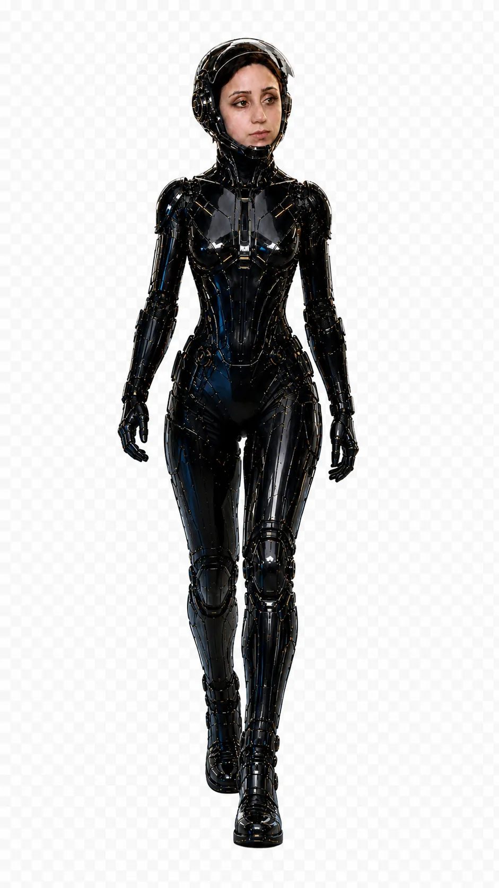
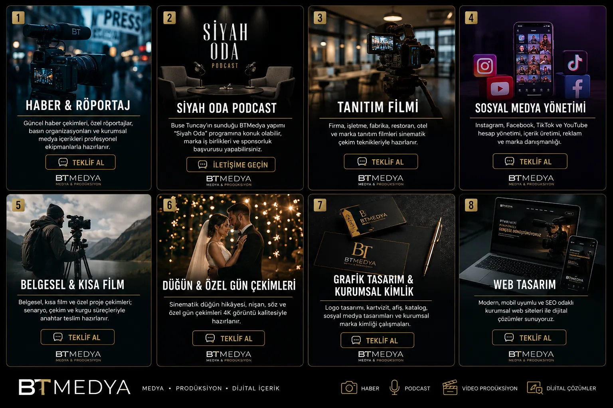
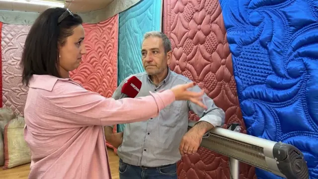
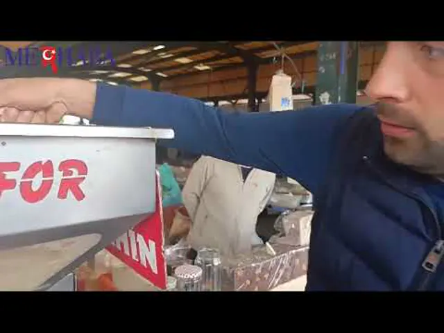
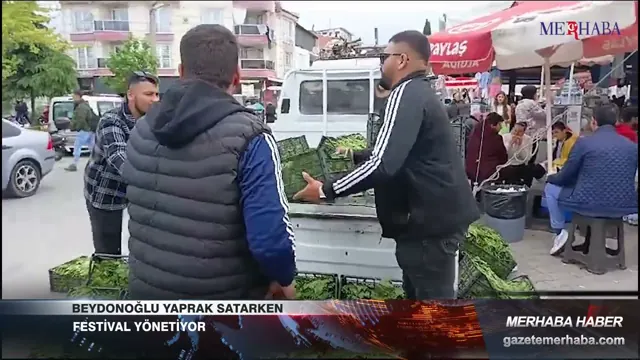

BT
BTMEDYA
Haberler yükleniyor...
Canlı haber akışı hazırlanıyor.
 BTMEDYA
TEKLİF AL ↗
BTMEDYA
TEKLİF AL ↗
BALIKESİR MEDYA VE PRODÜKSİYON AJANSI
Dijitalde fikir sizden, gerisi bizden. Haber, prodüksiyon ve yapay zekâyı tek ekipte topluyoruz.
01 Her şey sahadaki bir insanla başlar.
YAPAY ZEKÂ PRODÜKSİYONU — Bu bölümdeki görseller BTMEDYA tarafından üretildi.

HİZMETLERİMİZ
Prodüksiyon kataloğu ve WhatsApp kataloğundaki 17 hizmetin tamamı. Bir karta dokunduğunuzda o hizmet için WhatsApp konuşması hazır açılır.
Güncel haber çekimleri, özel röportajlar, basın organizasyonları ve kurumsal medya içerikleri profesyonel ekipmanlarla hazırlanır.
TEKLİF AL → PRODÜKSİYONBelgesel, kısa film ve özel proje çekimleri; senaryo, çekim ve kurgu süreçleriyle anahtar teslim hazırlanır.
TEKLİF AL → PRODÜKSİYONFirma, işletme, fabrika, restoran, otel ve marka tanıtım filmleri sinematik çekim teknikleriyle hazırlanır.
TEKLİF AL → PRODÜKSİYONSinematik düğün hikâyesi, nişan, söz ve özel gün çekimleri 4K görüntü kalitesiyle hazırlanır.
TEKLİF AL → YAYINBuse Tuncay’ın sunduğu BTMEDYA yapımı “Siyah Oda” programı. Konuk olabilir, marka iş birliği ve sponsorluk için başvurabilirsiniz.
TEKLİF AL → SOSYAL MEDYAMarkanız için aylık içerik planı, gönderi metinleri, temel görsel yönlendirmeleri ve yayın takvimi hazırlanır.
BTM-SM-START → SOSYAL MEDYASosyal medya hesaplarınız strateji, içerik, tasarım, planlama ve performans takibiyle birlikte yönetilir.
BTM-SM-PRO → İÇERİK & TASARIMInstagram, Facebook ve LinkedIn için gönderi metinleri, carousel akışları, hikâye fikirleri ve kısa video senaryoları hazırlanır.
BTM-CONTENT → İÇERİK & TASARIMMarkanızın renk, yazı karakteri ve iletişim diline uygun gönderi, hikâye, carousel ve kampanya görselleri hazırlanır.
BTM-DESIGN-SM → İÇERİK & TASARIMReels ve kısa videolar için konu, senaryo, ekran metni, açılış cümlesi ve çağrı hazırlanır.
BTM-REELS → YAPAY ZEKÂİşletmenizde içerik, müşteri iletişimi, belge düzenleme, raporlama ve tekrar eden işler için güvenli AI kullanım alanları belirlenir.
BTM-AI-CONSULT → YAPAY ZEKÂInstagram, Facebook ve WhatsApp için karşılama, SSS, yönlendirme ve lead toplama akışları hazırlanır; riskli sorular insana aktarılır.
BTM-AI-CHAT → YAPAY ZEKÂMarka bilgilerinizi ve onay sürecinizi kullanan, taslak üreten ve yayın öncesi insan onayına sunan AI içerik sistemi kurulur.
BTM-AI-CONTENT → HUKUK & SAĞLIKHukuk büroları için güven veren ve anlaşılır içerik ile tasarım desteği.
Hukuki görüş veya dava sonucu garantisi sunulmaz.
BTM-LEGAL-COMM → HUKUK & SAĞLIKKlinik, hekim ve sağlık markaları için mahremiyete duyarlı içerik ve tasarım desteği.
Tanı veya kişiye özel tedavi önerisi sunulmaz.
BTM-HEALTH-COMM → MARKA & WEBLogo, kartvizit, afiş, katalog, renk paleti ve sosyal medya şablonlarıyla tutarlı bir marka görünümü oluşturulur.
BTM-BRAND → MARKA & WEBHizmetlerinizi ve iletişim kanallarınızı mobil uyumlu, SEO odaklı ve anlaşılır biçimde sunan web sitesi tasarlanır.
BTM-WEB →Balıkesir ve çevresinden doğrulanmış saha haberleri.
Sosyal içerik, marka kimliği ve dijital üretim.
Kamera, kurgu, renk ve final master akışı.
Canlı haber akışı hazırlanıyor.
MARKA / GÖRSEL KİMLİK
BTMEDYA'nın kendi marka dili: hizmet kataloğu, görsel kimlik ve sunum yüzü. Bu bölümdeki sahne görselleri yapay zekâ ile üretildi.



AI LAB / SHOWREEL
Konsept, prompt ve prodüksiyon disipliniyle üretilen kısa AI video örnekleri. Reklam ve sosyal içerik referansı.
SAHADAN / YAYINLANMIŞ İŞ
Buse Tuncay'ın Gazete Merhaba için hazırladığı saha haberleri. Videolar MerhabaBalıkesir kanalında, metinler gazetemerhaba.com'da yayında; ikisine de buradan gidebilirsiniz.



Arşivde 27 imzalı haber var, her birinin kaynak bağlantısı kendi sayfasında duruyor. TÜM ARŞİVİ AÇIN ↗

BTMEDYA YAPIMI / PODCAST
Buse Tuncay'ın sunduğu BTMEDYA yapımı sohbet ve röportaj programı. Programa konuk olmak, marka iş birliği ya da sponsorluk için başvurabilirsiniz. Yayın takvimi başvurular üzerinden belirleniyor.
Stüdyo görseli yapay zekâ ile üretilmiş bir konsept görselidir.
KONUK / SPONSORLUK BAŞVURUSU ↗BTMEDYA / AI LAB
AI video, AI görsel, reklam kreatifi, içerik sprintleri ve dönüşüm odaklı dijital deneyimleri gerçek prodüksiyon akışıyla birleştiren laboratuvar.
TEKLİF MİMARİSİ
İhtiyacını seç, seçtiğin hizmet kapsamını gör ve bağlamlı bir WhatsApp teklif konuşması başlat.
Henüz seçim yapılmadı.
WHATSAPP'TA TEKLİFİ BAŞLAT ↗BTMEDYA
Balıkesir merkezli haber, medya prodüksiyon ve yapay zekâ ajansı. Doğrulanmış haber üretiminden sinematik video prodüksiyonuna, AI destekli içerik üretiminden dijital medya çözümlerine kadar geniş bir yelpazede hizmet veriyoruz.
BTMEDYA HAKKINDA ↗SIKÇA SORULANLAR
Kısa ve net cevaplar. Hepsinin karşılığı sitede duruyor, tıklayıp kendiniz bakabilirsiniz.
Hayır. Kimse bunu dürüstçe veremez. Garanti yerine yayınlanmış işimize bakmanızı öneririz: arşivde 27 haber var, hepsi imzalı ve her birinin kaynağı kendi sayfasında açık duruyor.
HABER ARŞİVİNİ AÇ ↗Evet. Arşivdeki her haberin altında yazarı ve orijinal yayın bağlantısı duruyor. Arşiv sürümleri yeniden yazılmış olsa da orijinal yayın bilgileri korunuyor, bunu her haber sayfasında görebilirsiniz.
ÖRNEK BİR HABERİ AÇ ↗Sunum beklemenize gerek yok, hepsi bu sayfada. Haber arşivi, portföy ve yapay zekâ ile üretilmiş kısa video örnekleri açık duruyor.
PORTFÖYE GİT ↗Balıkesir merkezliyiz. Haber tarafında yerel ve ulusal yayın, prodüksiyon ve dijital işlerde ise konum fark etmeksizin çalışıyoruz.
BTMEDYA HAKKINDA ↗Sabit fiyat listesi yok. Fiyat; kapsam, adet, platform ve teslim süresine göre belirleniyor. İhtiyacınızı yazdığınızda ona göre teklif hazırlıyoruz. Katalogdaki her hizmetin yanında ürün kodu duruyor, konuşmayı o kodla başlatabilirsiniz.
HİZMET KATALOĞUNU AÇ ↗Teslim süresi işin kapsamına ve onay hızına göre değişir. Tek bir tasarımla aylık bir sosyal medya yönetimi aynı takvimde ilerlemez. Hizmeti ve başlamak istediğiniz tarihi yazarsanız size gerçekçi bir süre veririz; tahmini süre teklifte yazılı olarak yer alır.
Revizyon hakkı ve ödeme koşulları işin kapsamına bağlı olduğu için teklif aşamasında yazılı olarak netleştiriliyor. Böylece iş başlamadan önce ikimiz de neyin dahil olduğunu aynı metinden görüyoruz.
Ayrımı net tutuyoruz. Haber tarafında bilgi doğrulaması ve kaynak sorumluluğu insana aittir; yapay zekâ haber üretiminde karar verici değildir. Kurulduğumuz AI içerik sistemlerinde de üretilen her taslak yayın öncesi insan onayına düşer.
Sitedeki tanıtım görselleri ve kısa filmler yapay zekâ ile üretildi ve bulundukları bölümde bu açıkça yazıyor. Saha haberlerimizin videoları ise gerçek çekimdir, kaynak bağlantılarıyla birlikte duruyor.
SAHA VİDEOLARINI GÖR ↗WhatsApp üzerinden kimlik belgesi, TC kimlik numarası, sağlık raporu, tanı veya ilaç bilgisi, dava dosyası, banka ve ödeme bilgileri ya da gizli müşteri belgeleri göndermeyin. Otomatik akışımız bu tür içerikleri toplamaz; hukuk ve sağlık konuları geldiğinde otomasyon durur ve konuşmayı doğrudan bir kişi devralır.
Teklif için yeterli olan bilgiler: işletme adı, sektör, ilgilendiğiniz hizmet, aktif platformlar, tahmini çalışma hacmi ve başlangıç tarihi.
Evet, ama yalnızca iletişim ve tasarım tarafında. Hukuk bürolarına içerik ve görsel dil desteği veriyoruz; kişiye özel hukuki görüş vermiyor, dava sonucu ya da tazminat garantisi sunmuyoruz. Sağlık kurumlarında mahremiyete duyarlı içerik üretiyoruz; tanı, tedavi ya da ilaç önerisi sunmuyoruz.
İLGİLİ HİZMETLERİ GÖR ↗Üç yol var: iletişim formu, WhatsApp ya da doğrudan telefon. Formdan gelen mesajlar kaydediliyor ve bildirim olarak bize düşüyor, yani yazdığınız mesaj kaybolmuyor.
İLETİŞİM SAYFASI ↗DENEYİN
Düğmeyi basılı tutun. Bıraktığınız anda duracak.
Balıkesir'in son kalaycısı İlyas Baykal.
Bu bir arşiv haberimiz. İmzalı, kaynağı açık, yayında.
HABERİ OKUYUN ↗Fare ile basılı tutun, parmağınızla dokunup bekleyin ya da klavyeyle boşluk tuşunu basılı tutun.
FİKRİNİZ VAR MI?
Projenizi anlatın; hedefinize uygun medya, tasarım ve yapay zekâ çözümünü birlikte kuralım.